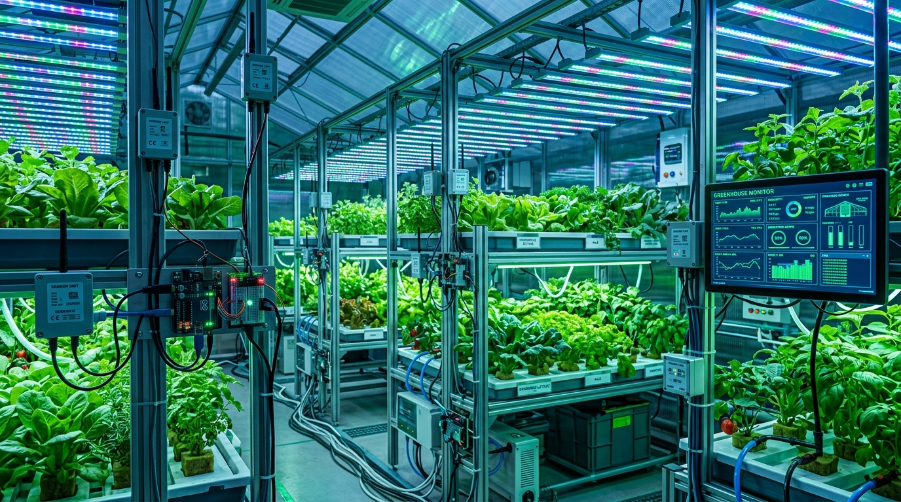
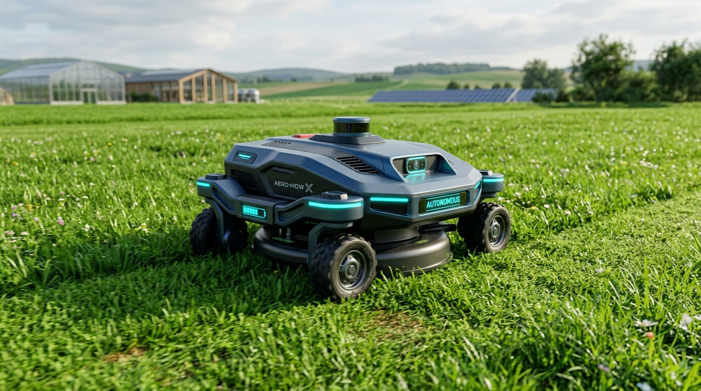
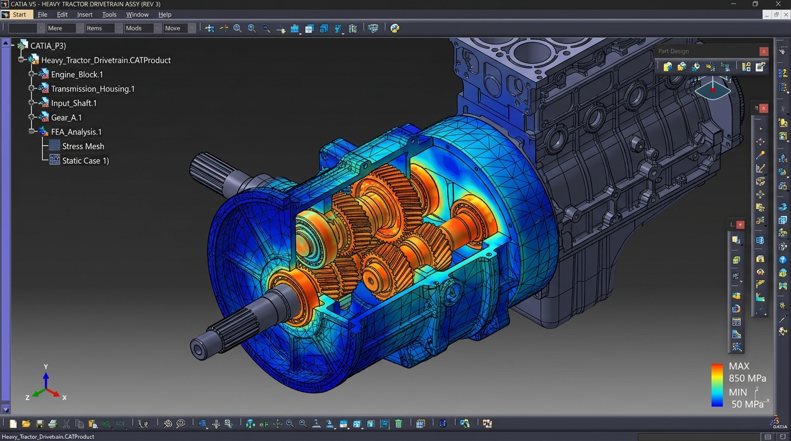

Piyush Raj
B.Tech Agricultural Engineering Student
Motivated and enthusiastic final-year Agricultural Engineering student with practical exposure to agricultural machinery, tractor systems, CAD design, and engineering analysis. Experienced in CATIA V5, 3DEXPERIENCE, ANSYS, and Python with a focus on farm mechanization and emerging ag-tech.
About Me
Engineering Profile
I am a final-year B.Tech Agricultural Engineering student at Centurion University of Technology and Management (CUTM), Odisha. Passionate about solving modern agricultural challenges through mechanical engineering principles, farm machinery automation, and computer-aided engineering (CAE).
My expertise spans 3D component modelling in CATIA V5, structural stress & deformation analysis using ANSYS Workbench, and developing IoT-enabled smart agricultural prototypes using Python & Arduino. Having completed hands-on internships at government institutes such as CFMTTI Budni and ICAR-IISWC Dehradun, I bridge theoretical engineering knowledge with practical field implementation.
Core Technical Interests
Tractor Design & Development
Engine, transmission, hydraulics, PTO, & heavy machinery systems.
Agricultural Machinery
Primary/secondary tillage implements & combine harvesters.
CAD Modelling
3D part design, assemblies, and surface modelling in CATIA V5.
Product Design
Designing ergonomic, functional, and durable ag-equipment.
Farm Mechanization
Optimizing field power efficiency and reducing manual labor.
Precision Agriculture
Data-driven farming, sensors, and GPS field mapping.
Agricultural Drones
UAV aerial crop spraying, multispectral imaging, and mapping.
Engineering Simulation
FEA structural stress, strain, and deformation analysis in ANSYS.
Research & Development
Prototyping innovative agtech solutions for sustainable farming.
Education
Bachelor of Technology (B.Tech) in Agricultural Engineering
Centurion University of Technology and Management (CUTM)
Odisha, India
Key Academic Focus Areas:
Skills & Expertise
CAD & Product Design
Simulation & Analysis
Agricultural Engineering
Emerging Ag-Technology
Programming & Software Tools
Internship Experience
Agricultural Engineering Intern
Central Farm Machinery Training & Testing Institute (CFMTTI)
Budni, Madhya Pradesh, India
- Studied comprehensive tractor systems including internal combustion engines, transmission assemblies, hydraulic lift mechanisms, Power Take-Off (PTO), power steering, and braking systems.
- Assisted senior engineers in official tractor performance testing, structural inspection, drawbar pull tests, fuel consumption evaluations, and preventive maintenance protocols.
- Gained practical hands-on exposure to operating heavy farm machinery, rotavators, combine harvesters, and seed drills.
- Prepared detailed technical observation reports and documented field test findings for official certification records.
Agricultural Engineering Intern
ICAR – Indian Institute of Soil and Water Conservation (IISWC)
Dehradun, Uttarakhand, India
- Studied soil and water conservation engineering practices, runoff control structures, check dams, and micro-watershed management techniques.
- Assisted in field irrigation activities, soil erosion measurement, hydrological observations, and water harvesting structures.
- Participated actively in topographical field surveys, soil sampling, technical observations, and watershed data collection.
- Compiled comprehensive technical reports detailing conservation measures and sustainable land management solutions.
Featured Projects

Smart Agriculture & IoTSmart Greenhouse Automation System
Developed an automated smart greenhouse climate & irrigation monitoring system using Arduino microcontrollers and sensors to ensure optimal crop yield.

Agricultural MachineryAutomatic Lawn Mower
Designed and fabricated a prototype automatic lawn mower equipped with a DC electric motor drive system, cutting blade mechanism, and rugged chassis.

CAD & Product DesignTractor Component Design & Assembly using CATIA V5
Designed complex tractor transmission gear parts and engine components in CATIA V5. Created full 3D assembly models focusing on part tolerances and kinematics.
Achievements & Leadership
College Secretary
Centurion University of Technology and Management (CUTM)
Present- Coordinate major student activities, technical fests, and inter-departmental programs.
- Act as key liaison supporting seamless communication between students, faculty, and administration.
- Organize academic seminars, agricultural tech workshops, and cultural events.
- Demonstrate high-level leadership, team management, event organization, and public communication.
Member
All India Agricultural Students Association (AIASA)
PresentActive member contributing to national discussions on agricultural technology adoption, youth empowerment in farming, and farm engineering advancements.
Secured 1st place in the university intra-college sports championship.
Active participant in rural development drives and tree plantation campaigns.
Engaged in Culture, Sports, and Responsibility events at CUTM.
Certifications
CATIA V5 Certification
Certified in Mechanical Part Design, Assembly Modelling & Drafting in CATIA V5.
Verified SkillPython Programming Certificate
Certification covering core Python programming, data structures, and script automation.
Verified SkillNPTEL – Micro Irrigation Engineering
Advanced course on drip & sprinkler irrigation system design, hydraulics, and water management.
NPTEL CertifiedInternship Certificate – ICAR-IISWC
Official completion certificate for Soil and Water Conservation Engineering internship at Dehradun.
Govt Research InstInternship Certificate – CFMTTI
Official completion certificate for Tractor Systems & Farm Machinery Testing internship at Budni.
Govt Testing InstContact Me
Email Address
piyushraj1267@gmail.comPhone Number
+91-8235627969Current Location
Samastipur, Bihar, India
LinkedIn Profile
linkedin.com/in/piyush-rajGitHub Profile
github.com/piyushraj1267-langContact Me
Let’s discuss opportunities, collaborations, or just say hello!
Get In Touch
Email Address
piyushraj1267@gmail.com
Phone Number
+91-8235627969
Current Location
Samastipur, Bihar, India
LinkedIn Profile
linkedin.com/in/piyush-raj
Send Me a Message
Fill out the form below and I’ll get back to you as soon as possible.